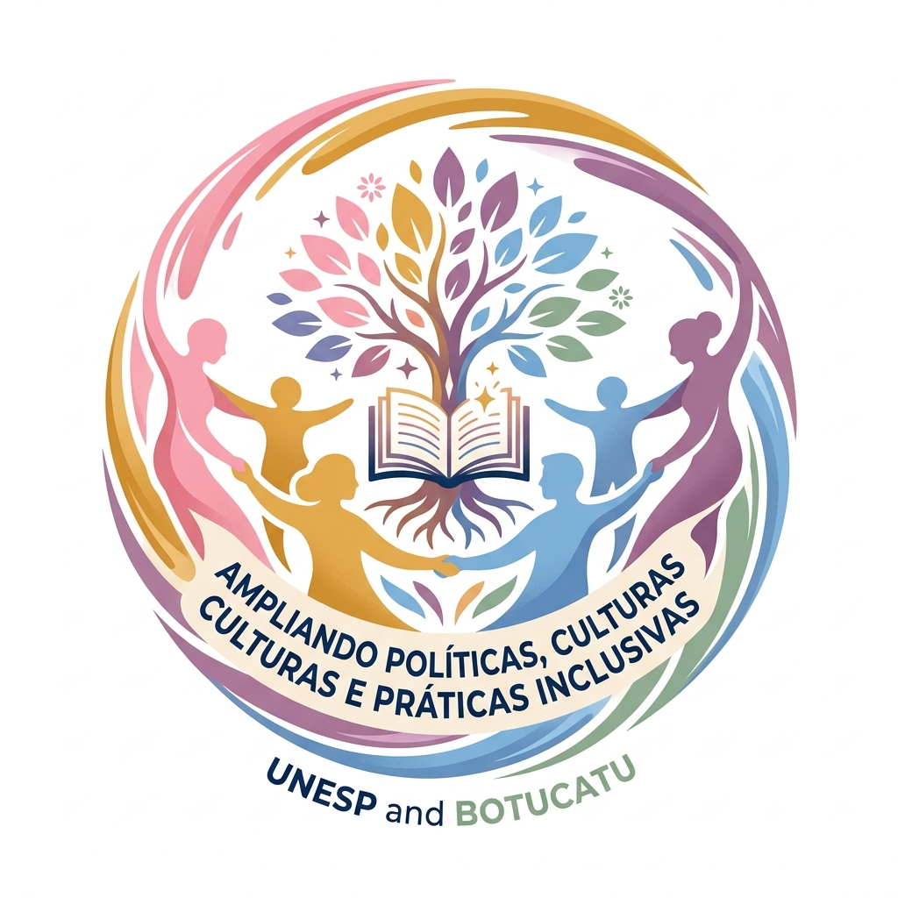

Equipe
Docentes da UNESP, pesquisadores dos laboratórios LaTeDIP e CMDTA, gestores e monitores integrados.
Iniciativa estruturante de suporte à Educação Inclusiva na Rede Municipal de Botucatu, articulando rigor científico universitário, formações continuadas em serviço e acompanhamento direto no cotidiano escolar.

UNESP Câmpus de Bauru & Prefeitura de Botucatu
O projeto “Ampliando Políticas, Culturas e Práticas Inclusivas” é realizado pela Universidade Estadual Paulista (UNESP) – Faculdade de Ciências (Câmpus de Bauru) em parceria com a Prefeitura Municipal de Botucatu e a Secretaria Municipal de Educação. Iniciado em 1º de setembro de 2025, consolidou-se como um dos mais amplos movimentos de suporte à Educação Inclusiva em nossa região.
O município inicia uma etapa pioneira com a implementação da avaliação biopsicossocial, realizada por observações diretas em contexto escolar e conduzida por equipe multidisciplinar vinculada à UNESP. Essa abordagem amplia o olhar sobre o estudante, considerando suas dimensões pedagógicas, sociais e emocionais, para além de classificações diagnósticas restritas.
Estão em andamento a expansão da equipe de Psicologia com carga horária estendida, suporte técnico especializado incluindo neuropediatra, e oferta de atendimento terapêutico na Sala Multissensorial localizada no SEP — Serviço de Estimulação Precoce (Av. Santana, Centro – Botucatu).
Conheça detalhadamente cada uma das 16 frentes estabelecidas no Roteiro Oficial do Projeto. Clique em qualquer card para abrir os objetivos, metodologias e materiais.
Docentes da UNESP, pesquisadores dos laboratórios LaTeDIP e CMDTA, gestores e monitores integrados.
Percursos formativos em serviço para 655 profissionais da rede, alinhados às demandas das escolas.
Alinhamento estratégico com diretores e equipes gestoras para consolidação de culturas inclusivas.
Formação e mediação pedagógica para acompanhamento do ensino colaborativo e práticas em sala de aula.
Intervenções especializadas para superação de barreiras de aprendizagem e estratégias personalizadas.
Articulação multiprofissional com psicologia escolar, neuropediatria e assessoria técnica especializada.
Fortalecimento do Atendimento Educacional Especializado nas Salas de Recursos Multifuncionais.
Interlocução, suporte e articulação contínua com entidades e serviços especializados de Botucatu.
Avaliação biopsicossocial pioneira em contexto escolar com 20 casos prioritários já em intervenção.
Capacitação para profissionais de apoio escolar no manejo inclusivo, alimentação, locomoção e cuidado.
Até 50 estudantes de graduação da UNESP com supervisão semanal atuando diretamente nas escolas.
Escuta ativa, orientação e fortalecimento do vínculo de parceria entre a família e a escola.
Articulação institucional direta com o Núcleo de Apoio Pedagógico Especializado de Botucatu.
Calendário integrado de encontros formativos, atendimentos no SEP e supervisões do convênio.
Repositório de documentos oficiais, termos do convênio, formulários e cartas informativas.
Publicações científicas, cadernos pedagógicos, relatos de experiência e pesquisas do grupo.
Registros das etapas em andamento nas escolas, formações e atendimentos especializados.
Questionário online aplicado em 64 unidades escolares subsidia o planejamento das formações continuadas em serviço.
Equipe multidisciplinar da UNESP inicia observações diretas em contexto escolar para os 20 casos prioritários selecionados.
Oferta de estimulação precoce e integração sensorial na Av. Santana com apoio de neuropediatra e psicólogos.
Estudantes de graduação compartilham vivências práticas e recebem orientações de docentes pesquisadores da UNESP.
Cronograma das atividades formativas, supervisões e atendimentos da rede.
📍 Auditório da Secretaria de Educação · 08h30 às 11h30
💻 Encontro Online (UNESP & Equipes Diretivas) · 14h00
📍 Sala de Recursos Multifuncionais · 09h00
📍 Faculdade de Ciências UNESP / SEP Botucatu · 14h30
Repositório de artigos, cadernos formativos e documentos oficiais.
Estudo dos impactos da avaliação multidimensional frente ao diagnóstico clínico na Educação Básica.
Análise da formação em serviço de estudantes de graduação no suporte às unidades escolares.
Articulação de excelência entre pesquisadores da UNESP, gestão municipal de Botucatu, especialistas e estudantes em formação.
Universidade Estadual Paulista (UNESP) — Faculdade de Ciências · Câmpus de Bauru
Docente e pesquisadora titular na área de Educação Especial e Inclusiva. Lidera os grupos e laboratórios de pesquisa LaTeDIP (Laboratório de Tecnologias para o Desenvolvimento e Inclusão de Pessoas) e CMDTA (Centro Multidisciplinar para o Desenvolvimento de Tecnologias Assistivas), coordenando a cooperação técnico-científica com o município de Botucatu.
Docentes, pesquisadores e pós-graduandos responsáveis pela fundamentação teórica, análise de dados e condução das pesquisas aplicadas.
Equipe gestora de Botucatu, articuladores do NAPE e supervisores escolares que coordenam a execução nas 73 unidades de ensino.
Psicólogos escolares com carga horária estendida, psicopedagogos, terapeutas e neuropediatra para as avaliações biopsicossociais.
Até 50 estudantes bolsistas e estagiários da UNESP que atuam nas salas de aula com acompanhamento e supervisão semanal rigorosa.
A Educação Inclusiva se constrói de forma coletiva. Este canal está aberto para que professores, gestores, monitores, famílias e profissionais da rede enviem dúvidas, relatos e ideias para o contínuo aprimoramento do convênio.
Resumo explicativo da frente de atuação.
Objetivo formal no âmbito do convênio.
Como a frente é executada no contexto escolar.
Segmentos envolvidos diretamente.